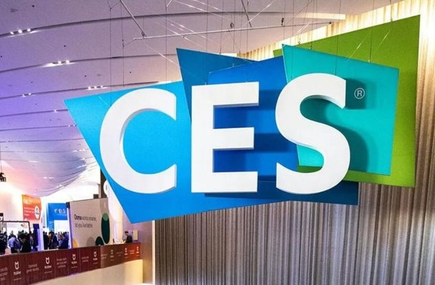
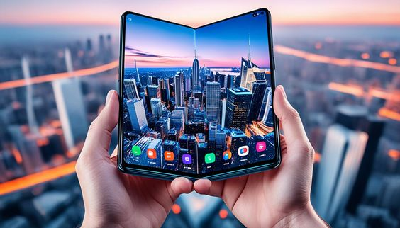
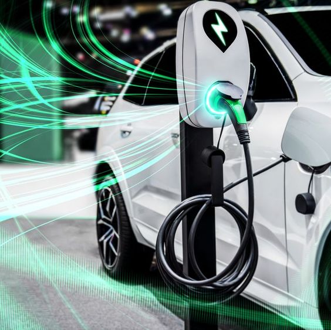
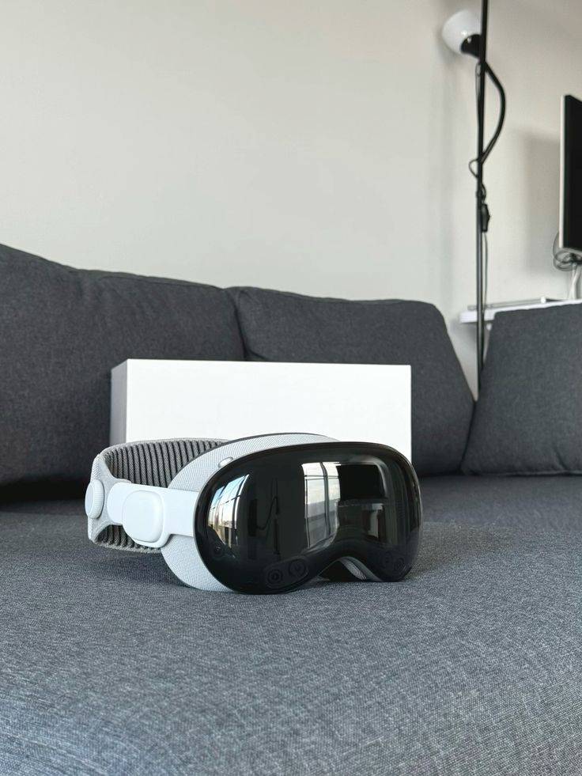

CES 2024, one of the largest tech trade shows, unveiled several groundbreaking technologies
June 8, 2024

1. Samsung's Glasses-Free 3D Gaming Display: This innovation allows users to experience 3D visuals without the need for special glasses, enhancing the gaming experience.
2. LG's Transparent OLED TV: This television combines sleek design with advanced display technology, offering a see-through screen that can blend into any environment.
3. AI-Integrated Devices: Numerous devices showcased at CES integrated AI to enhance functionality and user experience, from smart home gadgets to AI-driven health tech.
4. Samsung's Transparent Micro-LED Display: This display technology resembles a hologram and showcases the potential future of screens with its impressive clarity and lack of a visible frame.
The social media landscape is evolving rapidly
June 1, 2024
1. Instagram's Threads: Recently, Threads surged in popularity, especially after its launch in Europe. The platform has revitalized interest, positioning itself as a significant player.
2. X (formerly Twitter): Under Elon Musk's leadership, X has faced challenges balancing free speech with harmful content. The platform's approach has sparked debates and regulatory scrutiny.
3. Regulatory Changes: The European Union is leading the charge with regulations that impact global tech companies, aiming to create a safer and more accountable social media environment. This regulatory pressure is expected to shape the policies of platforms like Threads, X, and others in 2024.
Foldable technology continues to gain traction
May 24, 2024

1. Samsung's Galaxy Z Fold 6 and Z Flip 6: These upcoming models are expected to be thinner and lighter, though they may not introduce significant innovations.
2. Motorola and Google: These companies are also committed to foldable devices, with Motorola focusing on affordability.
Future Prospects: The use of flexible OLED screens might expand beyond phones to wearable tech, such as wraparound wrist screens or smart rings, offering new possibilities for device design and functionality.
The EV market is set for significant growth in 2024
May 20, 2024

1. New Models: A variety of new EV models from different manufacturers are expected to hit the market, increasing competition and potentially lowering prices.
2. Charging Infrastructure: Continued expansion of charging infrastructure is crucial for wider EV adoption.
3. Subsidies and Regulations: Changes in subsidies, especially in the US, could impact the affordability and adoption rate of EVs. Nonetheless, the shift towards electric mobility remains strong, driven by advancements in battery technology and increasing environmental awareness.
Apple Vision Pro Headset
May 18, 2024

The Apple Vision Pro headset is a highly anticipated AR and VR device, expected to launch in July 2024. It promises to offer a mixed reality experience by blending digital content with the real world. The headset features impressive optics and silicon technology, reflecting Apple's commitment to high-quality products. However, with a hefty price tag of nearly $4,000, it may see limited adoption initially. There are speculations that Apple could introduce a more affordable version in the future, which would broaden its market appeal.